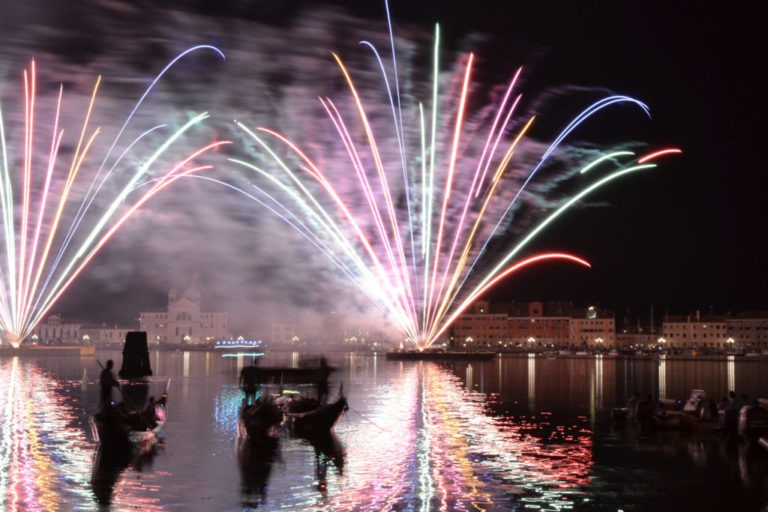
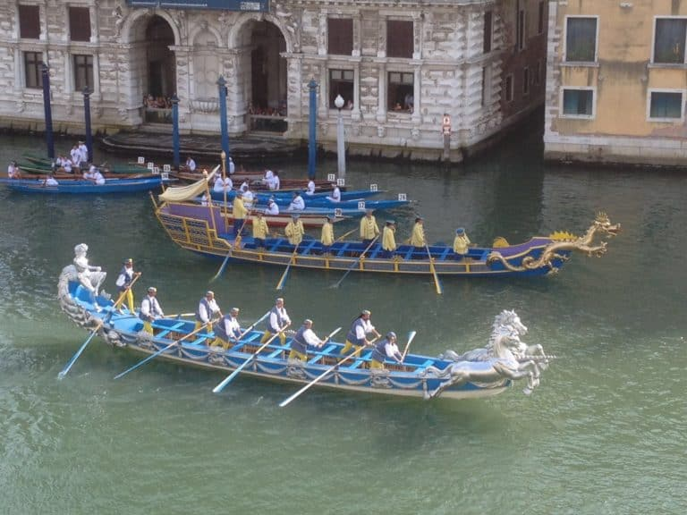

Le Carnaval de Venise : la fête de Venise la plus célèbre !Nous
avons
consacré une section à part entière sur le Carnaval de Venise et nous nous concentrerons
donc ici sur les fêtes traditionnelles de la ville. Leurs racines anciennes remontent à l’âge
d’or
de la République : le Rédempteur, la fête Madonna della Salute le 21 novembre, la fête de la
Sensa.
La voga à la Vénitienne (que d’ailleurs nous pratiquons) est un vrai coup de cœur pour nous ! Ne
vous étonnez pas si nous avons choisi de vous présenter aussi le calendrier des régates,
évènements
très attendus à Venise.
Le Rédempteur : le prince des événements à VeniseLa fête du
Rédempteur est l’événement par excellence de la Sérénissime. Depuis 1577, cette fête est
célébrée chaque troisième week-end de juillet pour commémorer la libération de la ville d’une
terrible épidémie de peste. Aujourd’hui encore, un long pont flottant est construit sur le canal
della Giudecca.
Ce soir-là, les Vénitiens s’en donnent à coeur joie ! Oui, le Redentore se fête en barque (ou en
bateau) dans
le bassin Saint Marc pour attendre le fatidique moment du feux d’artifice tant attendu vers
23H30.

La régate historique de Venise : la Regata StoricaC’est
l’événement le plus important de la saison d’aviron qui se déroule le premier dimanche
après-midi de
septembre. Il a des origines anciennes qui remontent au XIVe siècle, bien que l’événement
structuré
tel que nous le connaissons aujourd’hui n’ait été développé qu’après 1942.
La régate historique de Venise se compose en deux parties.
